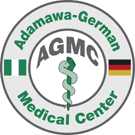

إرث من الدقة والرعاية
يُعد مستشفى آدموايا الألماني رمزًا للتميز الطبي والكفاءة، مستوحى من الالتزام بالدقة والرعاية المتأنية. كمقدم رعاية ثانوي مشهور، نقدم خدمات متخصصة تتجاوز في كثير من الأحيان العيادات التقليدية. يدمج منشأتنا التفاني في الرعاية المحورية للمريض مع التركيز على الممارسات الطبية المتقدمة.
تستند سمعتنا إلى أساس من التميز المهني والالتزام برفاهية المرضى. نسعى لتقديم نهج شامل للطب، لا نعالج المرض فقط بل الشخص بأكمله. تضمن بروتوكولاتنا المنظمة ومحترفونا المهرة رحلة علاج سلسة وفعالة لكل مريض.